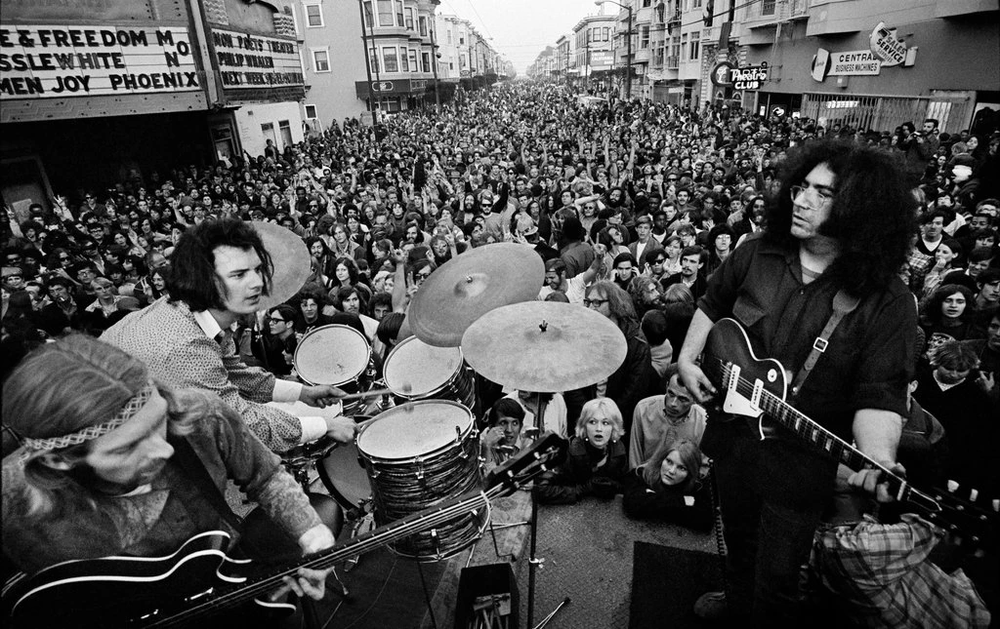

DEAD ZONE BLOG
& OTHER RAMBLINGS
THIS IS A BLOG ABOUT
THE GRATEFUL DEAD

CHINA CAT SUNFLOWER
Look for awhile at the China Cat Sunflower proud-walking jingle in the midnight sun Copper-dome Bodhi drip a silver kimono like a crazy-quilt stargown through a dream night wind Krazy Kat peeking through a lace bandana like a one-eyed Cheshire like a diamond-eye Jack A leaf of all colors plays a golden string fiddle to a double-e waterfall over my back Comic book colors on a violin river crying Leonardo words from out a silk trombone I rang a silent bell beneath a shower of pearls in the eagle wing palace of the Queen Chinee Look for awhile at the China Cat Sunflower proud-walking jingle in the midnight sun Copper-dome Bodhi drip a silver kimono like a crazy-quilt stargown through a dream night wind Krazy Kat peeking through a lace bandana like a one-eyed Cheshire like a diamond-eye Jack A leaf of all colors plays a golden string fiddle to a double-e waterfall over my back Comic book colors on a violin river crying Leonardo words from out a silk trombone I rang a silent bell beneath a shower of pearls in the eagle wing palace of the Queen Chinee
I KNOW YOU RIDER
I know you, rider, gonna miss me when I'm gone I know you, rider, gonna miss me when I'm gone Gonna miss your baby, from rolling in your arms Laid down last night, Lord, I could not take my rest Laid down last night, Lord, I could not take my rest My mind was wandering like the wild geese in the west The sun will shine in my back door someday The sun will shine in my back door someday March winds will blow all my troubles away I wish I was a headlight, on a north bound train I wish I was a headlight, on a north bound train I'd shine my light through cool Colorado rain I know you, rider, gonna miss me when I'm gone I know you, rider, gonna miss me when I'm gone Gonna miss your baby, from rolling in your arms I know you, rider, gonna miss me when I'm gone I know you, rider, gonna miss me when I'm gone Gonna miss your baby, from rolling in your arms